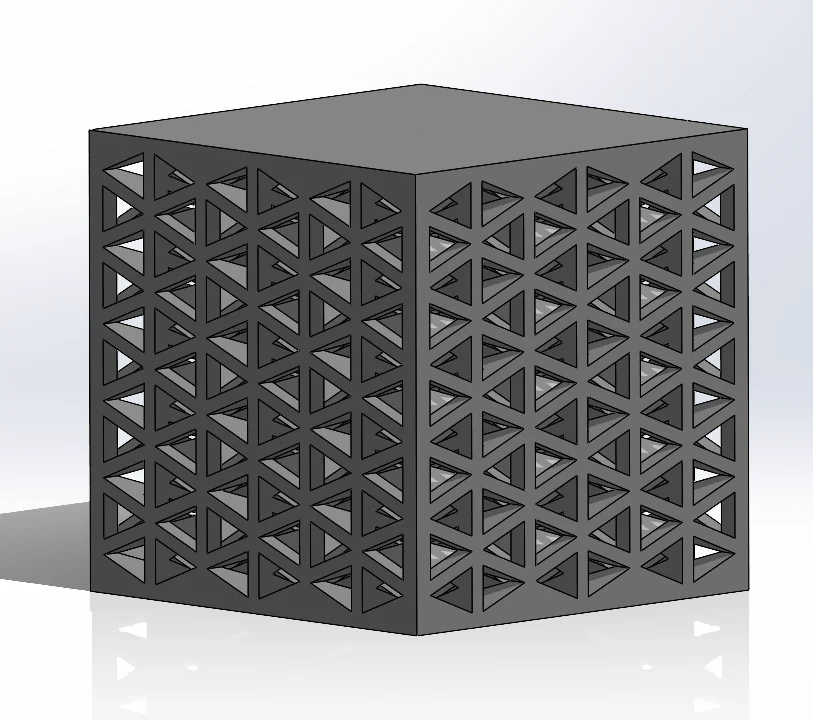
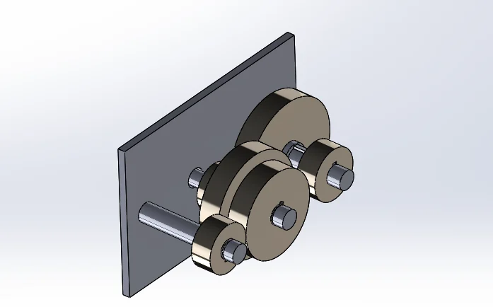

Mechanical design
CAD modelling, engineering design, mechanical systems and design development.
Mechanical & Materials Engineering
I am a fourth-year Mechanical and Materials Engineering student at Queen's University with significant experience in engineering design, project engineering, mechanical analysis, and multidisciplinary teams. Through my experience with academic projects, design teams, and industry experience, I have developed practical approach’s to engineering that combines real world problems with high-end technical analysis.
Four areas where my academic, design-team, and industry experience overlap.
CAD modelling, engineering design, mechanical systems and design development.
FEA, fatigue analysis, engineering calculations, force and torque analysis, and design verification.
Engineering documentation, layouts, BOMs, P&IDs, site assessment and project coordination.
Experience working in multidisciplinary engineering teams and communicating technical ideas.
Two high-level academic design projects which showcase the process from problem statements to analysis, prototyping, and verified results.

Designed and tested a porous lattice structure intended to improve shock absorption and athlete protection while considering weight, manufacturability, cost, and performance.
View project
Analyzed gearbox shaft designs under cyclic loading to verify fatigue safety, identify critical stress locations, and identify opportunities for material optimization.
View projectMy industry experience has made me particularly interested in engineering environments where technical problem-solving leads to something built, installed, or tested, rather than just being documented.